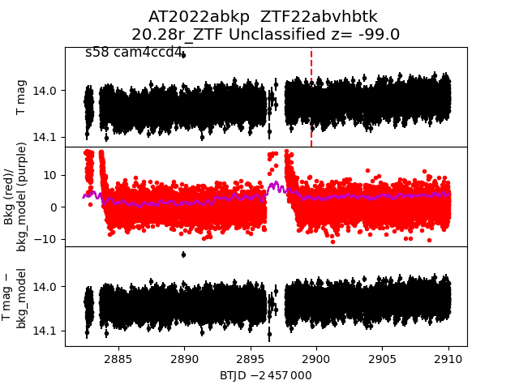
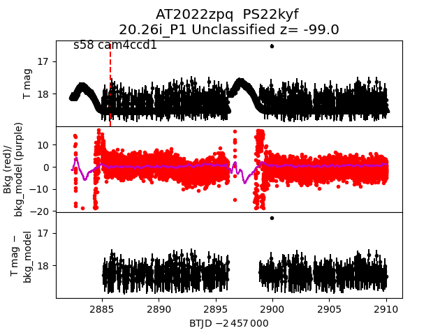

all transients in sector58 (57 total)
Each figure has three panels. The top panel shows the transient light curve, the middle panel shows the local background (estimated in an annulus), and the bottom panel shows a "background-model corrected" light curve. Details about the background model are in the README.
The vertical red line marks the time of discovery reported to TNS. Other useful metadata from TNS is in the figure title.
Note that the top and bottom panel are in magnitudes, while the middle panel is in differential flux units. The magnitudes are calibrated to the flux in the reference image used for image subtraction. Thus, flux from the host galaxy is included in these magnitudes.
3-sigma upper limits are plotted as triangles with no errorbars. A typical limiting magnitude is 19.6 in 30 minutes or 18.4 in 200 seconds (for low backgrounds).
The links allow you to download the light curve data as a text file.
More details in the README.
2022zgs
2022absy
2022adnu
2022aaxl
2022abkp

2022aadq
2022abaz
2022aajp
2022abcq
2022acbs
2022zzx
2022aaod
2022ablc
2022abku
2022ablu
2022acoy
2022abwa
2022abqm
2022abmz
2022zgj
2022aaib
2022abpb
2022zyo
2022zpq

2022aaox
2022abba
2022zxo
2022abhx
2022zmz
2022zea
2022aacc
2022aahl
2022aaga
2022abaw
2022aamt
2022absk
2022zxw
2022acnb
2022abpi
2022zyd
2022zwi
2022zyh
2022zsk
2022aajd
2022aaif
2022abqj
2022absd
2022actc
2022abjh
2022abbe
2022zei
2022aadv
2022acsy
2022aasm
2022aaho
2022abqo
2022acbg